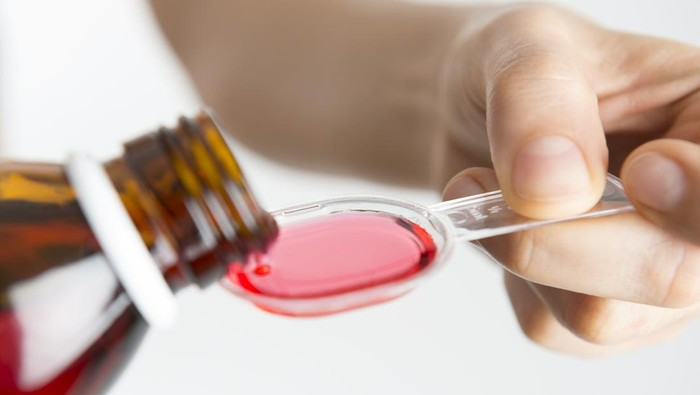
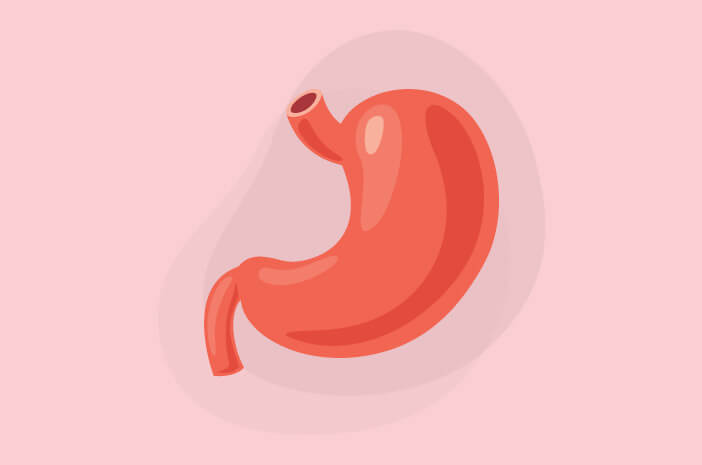

 Daftar Terbaru Obat Sirup Boleh-Tak Boleh Dikonsumsi dari Kemenkes
Cara Menggunakan Obat Tetes Mata Yang Tepat
 Gejala GERD yang Disebut Asam Lambung Kronis
Anggaran Kesehatan 2023 Fokus Tingkatkan Kualitas Layanan Kesehatan
Hati-Hati Nitrogren Cair Pada Ciki Ngebul, Ini Bahayanya
Pandemi Terkendali, Kemenkes Fokuskan Imunisasi Rutin pada Anak